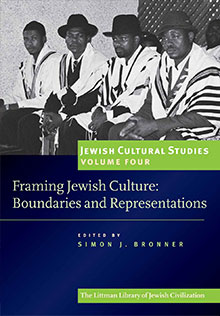

Jewish Cultural Studies, Volume 4
Framing Jewish Culture: Boundaries and Representations
Boundaries and borders raise fundamental questions about the difference between Jews and non-Jews in modern life. This volume considers this discourse on a global scale, examining both the thinking behind the rhetoric of boundaries and the manifestation of difference in social life. Collectively, the contributors to this volume expand our understanding of the social dynamics of framing Jewish identity.
More info
Modernity offers people choices about who they want to be and how they want to appear to others. The way in which Jews choose to frame their identity establishes the dynamic of their social relations with other Jews and with non-Jews—a dynamic complicated by how non- Jews position the boundaries around what and who they define as Jewish. This volume seeks to uncover these processes, historically as well as in contemporary behaviour, and to find explanations for the various manifestations, in feeling and action, of 'being Jewish'.
Boundaries and borders raise fundamental questions about the difference between Jews and non-Jews in modern life. At root, the question is how 'Jewish' is understood in social situations where people recognize or construct boundaries between their own identity and those of others. The question is important because this is by definition the point at which the lines of demarcation between Jews and non-Jews, and between different groupings of Jews, are negotiated. Collectively, the contributors to this volume expand our understanding of the social dynamics of framing Jewish identity.
The volume opens with an introduction that locates the issues raised by the contributors in terms of the scholarly traditions from which they have evolved. Part I presents four essays dealing with the construction and maintenance of boundaries, two showing how boundaries come to be etched on an ethnic landscape and two which question and adjust distinctions among neighbours. Part II focuses on expressive means of conveying identity and memory, while in Part III the discussion turns to museum exhibitions and festive performances as locations for the negotiation of identity in the public sphere. Part IV features a dialogue between observers of the paradoxes of Jewish heritage revival in Poland, and the perception of that revival by Jews and non-Jews.
About the editor
Simon J. Bronner is Distinguished University Professor of American Studies and Folklore at the Pennsylvania State University, Harrisburg, where he was founding director of the campus’s Holocaust and Jewish Studies Center. He has also taught at Harvard, Leiden (Netherlands), and Osaka (Japan) universities. He is the author and editor of over thirty-five books, including Youth Cultures in America (2016), Folklore: The Basics (2016), Greater Harrisburg’s Jewish Community (2011), Explaining Traditions: Folk Behavior in Modern Culture (2011), and Encyclopedia of American Folklife (2006). He edits the Material Worlds series for the University Press of Kentucky and has published in Jewish cultural studies in the Journal of Modern Jewish Studies, Jewish History, Yiddish, Markers, and Chuliyot: Journal of Yiddish Literature. As well as editing the Littman Library’s Jewish Cultural Studies series, he leads the Jewish Folklore and Ethnology section of the American Folklore Society. He has received the Kenneth Goldstein Award for Lifetime Academic Leadership, the Wayland D. Hand Prize in history and folklore, and the Peter and Iona Opie Prize in children’s culture from the American Folklore Society for his scholarly accomplishments.
About the contributors
Jonathan Boyarin, Mann Professor of Modern Jewish Studies, Department of Anthropology, Cornell University
Simon J. Bronner, Distinguished University Professor of American Studies and Folklore, Pennsylvania State University, Harrisburg
David Clark, writer and researcher, London; formerly taught at Thames Valley University and London Metropolitan University
Ruth Ellen Gruber, independent scholar, Italy
Samuel D. Gruber, Lecturer in Judaic Studies, Syracuse University
Rella Kushelevsky, Associate Professor, Department of the Literature of the Jewish People, Bar-Ilan University
Erica Lehrer, Associate Professor, Departments of History and Sociology/Anthropology, Canada Research Chair in Post-Conflict Memory, Ethnography and Museology, Director, Centre for Ethnographic Research and Exhibition in the Aftermath of Violence, Concordia University, Montreal
Magdalena Luszczynska, Hebrew University of Jerusalem
Amy K. Milligan, Departments of Religious Studies and Women and Gender Studies, Elizabethtown College
Annamaria Orla-Bukowska, social anthropologist, Jagiellonian University, Kraków
Holly A. Pearse, Wilfrid Laurier University, Ontario
Steve Siporin, Director, Folklore Program, Utah State University
Francesco Spagnolo, Curator, Magnes Collection of Jewish Art and Life, and lecturer, Department of Music, University of California, Berkeley
Sophie Wagenhofer, research fellow, Humboldt University, Berlin
Magdalena Waligorska, Alexander von Humboldt Fellow, Department of German Philology, Free University of Berlin
Jonathan Webber, Professor, Institute of European Studies, Jagiellonian University, Kraków
Marcin Wodzinski, Professor of Jewish History and Literature, University of Wrocław
Contents
Note on Transliteration
Introduction: Framing Jewish Culture
Simon J. Bronner
PART I: BOUNDARY CONSTRUCTION AND MAINTENANCE
1 Representing Jewish Culture: The Problem of Boundaries
Jonathan Webber
2 Trickster's Children: Genealogies of Jewishness in Anthropology
Jonathan Boyarin
3 Selective Inclusion: Integration and Isolation of Jews in Medieval Civic Space
Samuel D. Gruber
4 The Question of Hasidic Sectarianism
Marcin Wodzinski
PART II: NARRATING AND VISUALIZING JEWISH RELATIONSHIPS
5 Framing Father--Son Relationships in Medieval Ashkenaz: Folk Narratives as Markers of Cultural Difference
Magdalena Luszczynska
6 Sites of Collective Memory in Narratives of the Prague Ghetto
Rella Kushelevsky
7 Wearing Many Hats: The Boundaries of Hair-Covering Practices by Orthodox Jewish Women in Amish Country
Amy K. Milligan
8 Chronic Dissatisfaction: Negative Interfaith Romances and the Reassertion of Jewish Difference
Holly A. Pearse
PART III: EXHIBITIONS AND PERFORMANCES OF JEWISH CULTURE
9 'The Night of the Orvietani' and the Mediation of Jewish and Italian Identities
Steve Siporin
10 Jewish Museums: Performing the Present through Narrating the Past
David Clark
11 Framing Jewish Identity in the Museum of Moroccan Judiasm
Sophie Wagenhofer
12 The Framing of the Jew: Paradigms of Incorporation and Difference in the Jewish Heritage Revival in Poland
Magdalena Waligorska
PART IV. HOW REAL IS THE EUROPEAN JEWISH REVIVAL?
13 Beyond Virtual Jewishness: Monuments to Jewish Experience in Eastern Europe
Ruth Ellen Gruber
14 Unsettling Encounters: Missing Links of European Jewish Experience and Discourse
Francesco Spagnolo
15 Virtual Transitioning into Real: Jewishness in Central Eastern Europe
Annamaria Orla-Bukowska
16 Virtual, Virtuous, Vicarious, Vacuous? Toward a Vigilant Use of Labels
Erica Lehrer
17 Response
Ruth Ellen Gruber
Contributors
Index

436 pages, 23 illustrations, table
ISBN: 978-1-906764-08-1
£21.95 / $34.95
Publication 6 February 2014
Jewish Cultural Studies:

Volume One: Jewishness: Expression, Identity, and Representation

Volume Two: Jews at Home: The Domestication of Identity

Volume Three: Revisioning Ritual: Jewish Traditions in Transition
Volume Five: Mothers in the Jewish Cultural Imagination
Volume Six: Connected Jews: Expressions of Community in Analogue and Digital Culture